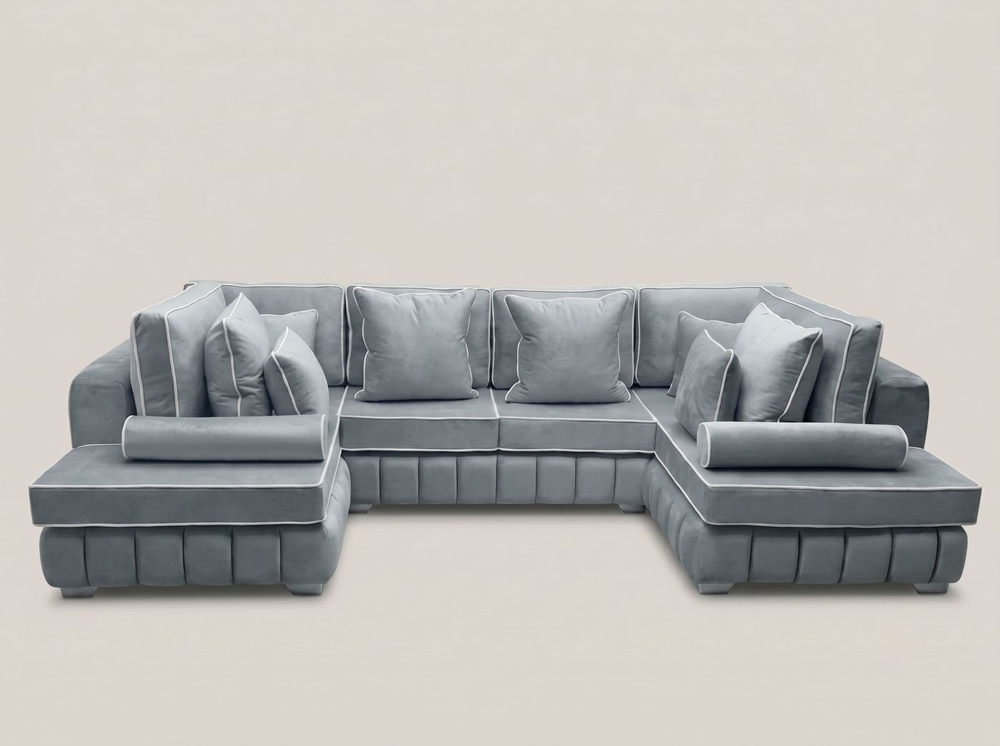

The Lilly in a wraparound U-shape — generous family seating with the same soft channel-stitched finish.

See all 8 fabrics & 93 colours →
Order on WhatsAppNo checkout needed — we confirm fabric, colour and size on WhatsApp.
Every Lilly U-Shape Sofa is made to order. You choose the fabric, the colour and the exact dimensions, and either return can be shortened independently. That is usually what makes a U-shape work in a real room, where a radiator or a bay window rarely sits where a standard sofa expects it to.
Frames are solid hardwood and the seats combine foam with a fibre topper, which matters more on a U-shape than on any other configuration because the two returns get used unevenly. Every sofa is covered by your rights under the Consumer Rights Act 2015, so if one turns out to be faulty we repair, replace or refund it and collect at our cost. U-shapes are built in sections as standard so they can be carried in and assembled in the room. We deliver free across mainland UK, usually within two to three days of your order being confirmed, and cash on delivery is available so you can pay when it arrives — see delivery for the detail, including the access measurements worth checking first. Because each sofa is cut to your specification, please read our returns and cancellations policy before you order.
Yes. Send us your room dimensions on WhatsApp and we'll adjust the length, depth and configuration to fit. There's no extra charge for standard resizing.
More than people expect, and this is worth getting right before you order. A U-shape needs clear space on three sides, so measure the full width of the room as well as the wall the back will sit against, and leave walking room in front. Send us the room dimensions and we will tell you honestly whether a U-shape or an L-shape suits the space better.
Yes. Asymmetric U-shapes are one of the most common changes we arrange, usually because a doorway, radiator or bay window sits in the way on one side. Tell us the constraint and we will build around it at no extra cost.
Yes. U-shapes are built in sections as standard, so they go through ordinary doorways and up ordinary stairs and are put together in the room. Let us know in advance about any particularly tight access.
Yes. Cash on delivery is available on most orders, or you can pay a deposit and settle the balance when the sofa arrives. Full details are on our delivery page.
Send us your room measurements on WhatsApp and we'll come back with fabric options, sizing help and a firm price — usually within minutes.
Message us on WhatsApp